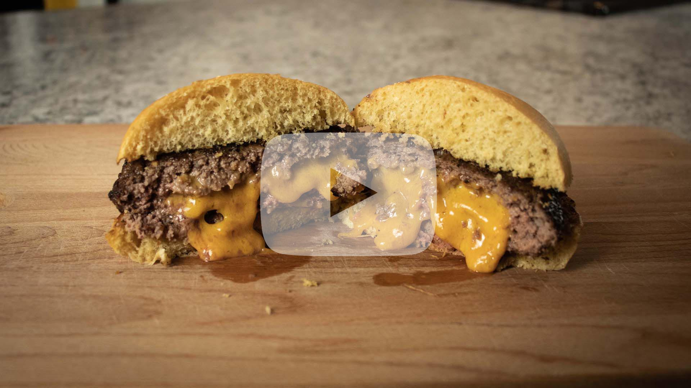

Juicy Lucy
What's needed:
- - 1 pound of ground chuck - 80/20 or 85/15
- - Block of cheese (I used extra sharp cheddar)
- - Salt and pepper
- - Hamburger roll or your choice
- - Toppings of your choice
Directions:
- 1. Portion pound of ground chuck into four 4 ounce portions.
- 2. Flatten each portion into thin burger. Try to get as thin/big of a burger as you can.
- 3. Cut up your cheese block into thin squares.
- 4. Add 3 - 4 pieces of cheese to the surface of two of the four patties. Don't overlap the cheese, let them sit edge to edge.
- 5. Add burger patty that doesn't have cheese on top of the patty that has cheese on it, creating a pocket of cheese in between two burgers.
- 6. Seal the two patties to form one patty. Be sure to really seal the edges well to avoid cheese leaking out while cooking.
- 7. Cook 6 - 8 minutes on each side over medium-high heat, or until at desired doneness.
- 8. Allow to rest for a few minutes to avoid biting into moulten lava cheese.
- 9. Serve and enjoy.